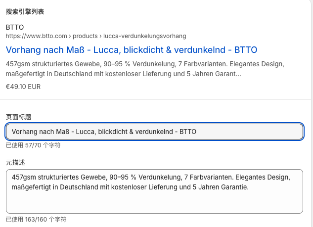

Cross-border electrician Commodity Feeds Implementing SOP
Linking the Shopivy product to Google Merchant Center (GMC) for uploading, searching keywords requires a clear set of fields and a check process. This paper is organized in accordance with the original PDF and contains, for example, the German-language curtains, an example of the execution from the preparation of the information to the online inspection.
I. DEFINITION OF SOP OBJECTIVES AND TEAM BETWEEN THE GROUP
The process is not only to upload the product to Shopify, but also to make it understandable to users, to make Google understand the goods, and to make subsequent Shoping or P Max easy to group and reset. Product information, SEOs and advertising should be of the same business calibre, and important attributes must have a basis on the landing page.
| Role | Responsible content |
|---|---|
| Product uploader | Collate product information, fill out titles, descriptions, URLs, pictures and internal labels. |
| SEO and Feed support | Screening of keywords, confirmation of core words, commodity classification and field mapping rules. |
| Advertising executives | Verification of GMC commodity status, custom labels and advertising grouping conditions. |
First, the target country and client language are indicated, then the product page and the feed content are arranged. For example, the German curtains are used here to describe the process in the English language, and the illustrative words should be adapted to the actual product and the market.
II. Preparation of product fundamentals prior to upload
Collects information and uploads it, and avoids creating properties by operation. It is recommended that a record of information be established for each product:
- Series names, style names, product types and brand names.
- Material, colour, size, function, installation and use of scenes.
- Custom or finished products, variants, prices, stocks and distribution conditions.
- Target markets and languages, product identification and raw images available.
Original example: Lucca of the German market customised to include blickdicht, verdunkelnd and strukturiertes Gewebe equals. Fabrication weight, luminant ratio, origin, warranty and distribution commitments are based on real product information and cannot be reproduced directly from the example to the point of sale.
III. Collating search words and then writing titles
The search habits of the target market confirm “what is this product” and then select the qualifier with real attributes. Google Ads keyword planners can be used, and correlation checks can be made against client expression and actual page; Don't just pursue high search volumes.
| Word category | Role | Example: German |
|---|---|---|
| Core Product Terms | Identification of product types | Vorhang nach Maß, Gardine nach Maß |
| Functional qualifier | Description function | blickdicht, verdunkelnd, transparent |
| Material certifiers | Description of material or style | Leinenoptik, Samt, Polyester |
| Site qualifiers | Description of the use position | Wohnzimmer, Schlafzimmer, Balkon |
Each paragraph retains a record of the core, alternative, functional, material and scenery terms. Different functions cannot be used at random, for example, curtains should not be added to an absence of shades.
iv. Fill out product titles and confirm Google Sync source
The title gives an accurate description of the commodity, followed by an order of important information. The headlines and search-oriented headings of the site can be organized by channel characteristics, but they must point to the same product and attributes and cannot be converted to another commodity for flow purposes.
Available text structure: Core Product Words - Sector Names, Functional Words - Branding I'm sorry. For example:
Vorhang nach Maß - Lucca, blickdicht & verdunkelnd - BTTO
This is a writing template, not a fixed format as requested by Google. Add the necessary colours or dimensions to the actual variants to avoid promotions, overblownings and irrelevant keywords.

The original screenshot selects the "search engine trade name". In Google & YouTube channel or feed application, the title and description field should be identified and the final value checked at the GMC. The source is selected on the assumption that the corresponding SEO title is complete and that the entire product cannot be selected by default.
V. Filling out the SEO titles, meta descriptions and URLs, respectively
SEO title summarizes the page theme, consistent with the core information on products; The metadata description is used to search for a summary of the results and should describe the product, key attributes and customized information in a concise manner. The SEO description is different from the GMC commodity description, and the “200+” description proposal in the original version should not be applied directly to the metadata description.

Example of a meta description can be written as: Vorhang nach Maß Lucca aus strukturiertem Gewebe. Individuelle Größen und ausgewählte Farben für Wohn- und Schlafzimmer. Use only when these options are actually available.
Product URL recommends short, readable, lowercase and short-wire, for example /products/lucca-vorhang-nach-mass I'm sorry. Redirection, inner-chain and feed links should be checked when URL changes are on line to avoid leaving old addresses that cannot be accessed.
VI. Completion of product description with a clear structure
Product descriptions should clarify the commodity rather than repeat keywords. It can be organized according to the following five components:
- First paragraph: Description of product type, section and core uses.
- Function: Lists the performances of true shades, perceiving, soundproofing, etc. and the conditions for their application.
- Materials: Description of composition, structure, touch, care and evidence-based parameters.
- Custom: Description of size, installation and options, and how the price corresponds to the actual purchase.
- Scenario: Description of suitable rooms or use of the environment to avoid functional conflicts.
The page description can be enhanced with paragraphs and bullet keys, but the format submitted to the GMC needs to be compatible with actual field specifications and synchronization. Feed commodities describe the focus of the commodity itself, avoiding being unrelated to the shop, competitors or promotional content.
If Tools Support product_highlight, the key selling points can be broken down into short entries. The full description and focus of the sale should be from the same real product information.
VII. Separate Shopivy tags from GMC custom labels
Shopivy labels serve internal retrieval, assembly and automation, for example de-custom, de-blackout, lucca I'm sorry. They will not automatically become GMC's Custom label because they exist in Shopivy; Checks application, field map or rule configuration.
GMC provides custom_label_0 to custom_label_4 Five optional self-defined fields are suitable for reporting or bid by product group. The original scheme, which may also be adjusted for profit, season or sales performance, is as follows:
| Fields | This SOP promise | Example: |
|---|---|---|
| custom_label_0 | Market grouping | de, fr, nl |
| custom_label_1 | Mode of sale | custom, ready |
| custom_label_2 | Main functions | blackout, sheer, outdoor |
| custom_label_3 | Material or style | linen, velvet, polyester |
| custom_label_4 | Series or paragraph type | lucca, milano, oslo |
Here, national values are just internal market labels. Not a substitute for the target country, language, distribution or advertising geolocation of Merchant Center I'm sorry. A multi-market commodity would need to be labelled in conjunction with the data source structure, and individual values would not be mistaken for all marketable countries.
Each field agrees on a meaning, one spelling and the value to be taken. The final GMC data are sampled for use in the advertising of the commodity group, following the conversion of rules applied or supported by Feed.
VIII. Checking Google Production Category and Variables
Google commodity classifications and custom labels have different roles. Selecting the appropriate specific categories in the current Google classification system, based on the primary function of the actual commodity; The curtains should not be warmed or soundproofed, and they should be assigned to another category of goods.
The Google Commodity Classification has an automatic classification mechanism, and whether it needs to be submitted or covered on its own initiative, depending on commodity and regulatory requirements; The manual filling classification of each product cannot be written as a uniform mandatory step. Actual data are confirmed when submitted, rather than just the name of the Shopify backstage.
At the same time, the variable identification, colour, size and group information are checked. The variants of the same paragraph should be clearly distinguished, and a click on the Feed link should also identify the corresponding commodity or variant.
IX. List of pre- and synchronous checks
| Check links | Focus |
|---|---|
| Basic information | Trade names, brand names, and logos are consistent with real products. |
| Price and inventory | Feeds, landing pages are consistent with the purchaseable options, and the currency and availability are correct. |
| Title and description | The same commodity is pointed at, the attributes are verifiable and there are no unrelated words or promotional texts. |
| Picture | The subject matter of the commodity is clear, the colour is true and meets the requirements of the corresponding picture. |
| Variables and Classifications | Colours, sizes, commodity groups and classifications are consistent with actual commodities. |
| Field Map | Verification of synchronized titles, descriptions and custom_label_0-4. |
| Pages and Markets | Links are accessible, language, distribution and purchase paths match the target market. |
| GMC Commodity Status | The products are then processed by looking at the synchronized results, reasons for rejection and data quality issues. |
First, check the synchronous success and then test the final commodity data. The Hotify modification may cause a problem of synchronization again, and therefore should not be checked only once during the first upload. The inspection of a commodity does not guarantee a display, an advertisement or a natural ranking.
X. COMPLETE THE RECORD OF A PRODUCT
For example, in Germany, custom curtains can be used to establish the following internal handover records, all of which are verified by product information:
| Record Item | Example: |
|---|---|
| Products | Lucca customised the curtains. |
| Markets and languages | Germany/ German |
| Core words | Vorhang nach Maß |
| Functions and materials | blickdicht, verdunkelnd, strukturiertes Gewebe |
| Page Path | /products/lucca-vorhang-nach-mass |
| Shopify Internal Tags | de-custom, de-blackout, lucca |
| GMC custom labels | De / custom / blackout / Corresponding Real Materials / Lucca |
| Receiving and Inspection | Pages, synchronized fields, price inventories, pictures and commodity status checked |
The uploader completes the information and page, SEO or Feed supports the verification of search intent and mapping, and the advertising colleague confirms the suitability of the goods for grouping by target market, series and function. It is easier to maintain the rules in the handover records than to change their names on a temporary basis.
I hope this piece will help you not to go sideways.
I hope this piece will help you to stay out of your way. Your recognition is the driving force behind my continued sharing and creativity.
Original under: Tyson. We need to continue to know how to put it, read it. Google Ads self-involved course, or view Google Advertisement Service.